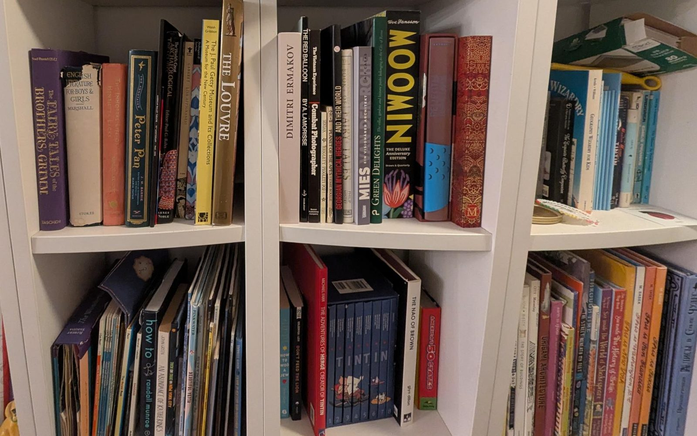

Schools · November 12, 2026
Grade the work. Tell parents the truth.

Dear Mayor Mamdani,
This September, Nikole Hannah-Jones wrote in The New York Times Magazine about sending her daughter to a struggling New York City public school out of principle. At some point, she realized that her daughter wasn’t learning and requested to review the work. It took a full semester to get it. When she finally got a folder of her daughter’s fourth-grade math assignments, every one was marked 100%. Nobody had checked the answers. When she did, most were wrong. Her daughter had straight A’s and an honors label. She described how her daughter realized that she was going to a badly performing school and how she struggled in a functioning selective public school in the city.
From all this, Ms. Hannah-Jones draws a bizarre conclusion: segregation and lack of funding are to blame. Not the teachers who gave 100% without checking the work, and not the administrators who let it go on. Her daughter's elementary school, P.S. 307, spends about $43,800 a year per student. Success Academy, whose students are mostly poor, Black and Hispanic and score among the best in the state, spends about $21,200. Lack of funding didn't fail her daughter. Adults who stopped doing their jobs did.
The problem
The numbers say this is not one school. This year, only half of the city's students in grades 3–8 were proficient in reading, down six points. Third-grade reading fell almost 14 points. Only about 42% of Black students and 37% of Latino students read at grade level. In 2024, 83% of the city's high school students graduated, but the State Comptroller found only 52% were college-ready. When a diploma and the skills behind it drift this far apart, families are being told their children are fine when they are not.
Poverty matters. In city schools where most children are poor, only about a third read at grade level, less than half the rate of the city's most advantaged schools. But poverty is not destiny. At Success Academy Bronx 5, nine in ten children are poor, and 96% read at grade level. At P.S. 66 in Richmond Hill, a regular district school where four in five children are low-income, 87% do, including 71% of students with disabilities. New York has 138 schools like these, where low-income children read far better than their poverty would predict. The difference is what happens in the classroom.
My take
Grades are information. A child whose wrong answers are marked correct, and parents who never see a mistake corrected, have no way to know something is wrong until it’s too late to fix it. Lowering expectations is not kindness. It moves the cost of failure onto the families who can least afford it.
We already know what works for children whose families lack resources to support them, because schools in this city are doing it. Success Academy gives its students about a third more time in class, with a longer day and a longer year. It teaches a demanding curriculum the same way in every classroom, trains its teachers before they start and coaches them in the classroom, and holds every child to the same clear rules. Its students are mostly poor, Black and Hispanic. In 2023, its schools ranked first in the state in math and third in reading, ahead of the wealthiest suburbs.
What I'm asking you to do
You asked Albany to keep control of the city’s schools, and in May it gave you two more years. That means these decisions are yours.
- Make the city's highest-poverty public schools work more like Success Academy: a longer school day and year, a proven reading and math curriculum, uniforms, strict and consistent discipline, and principals who coach teachers in the classroom every week.
- Require every school to publish its curriculum and lesson plans online, so parents, volunteers, journalists and oversight officials can see what children are being taught and how, even when families can’t check the work themselves.
- Create remedial schools for students who repeatedly disrupt class or turn violent: smaller classes, trained staff, counselors and a clear path back. These children deserve real help, and their classmates deserve a room where they can learn.
- Require that classwork and homework be graded and returned to students, with corrections, within a week.
- Make report cards honest: tell parents in plain words whether their child is reading and doing math at grade level, starting in kindergarten.
- Publish, for every school, how its grades compare with its state test results, so families can see where grades are inflated.
Every New York family deserves the truth about how their child is doing, in time to help. Grade the work.
Sincerely,
Anya Levitov
What you can do
- Volunteer at a public school near you. Reach out to the PTA or the principal and offer to tutor reading or math for students who are falling behind and whose families can’t help at home.
- Send this letter to the Mayor and ask him to require every school to publish its curriculum and lesson plans. Under mayoral control, he runs the city’s schools, and he alone can make it happen. Even when parents with fewer resources can’t check the work themselves, volunteers, journalists and oversight officials can fill that gap.
- Have a child in a city public school? Run for a seat on your district’s Community Education Council (for parents of children in pre-K through 8th grade) or, if your child is in high school, the Citywide Council on High Schools. The next elections are in spring 2027, with applications due early in the year. A seat gives you a much closer look at what is being taught in your district’s schools, and how.
- Endorse the Dear Mamdani agenda.
Sources
- Chalkbeat: Hannah-Jones essay sparks integration debate (including P.S. 307 spending)
- AEI: What Nikole Hannah-Jones learned from her daughter's school
- Independent Institute: Nikole Hannah-Jones fails the test
- Quillette: Other people’s children
- Reason on the Hannah-Jones essay
- Manhattan Institute: Success Academy spending per student, from audited financial statements
- Chalkbeat: 2026 NYC reading scores
- NYS Comptroller: College Readiness follow-up audit
- NYC Open Data: school reading results and school demographics (2023 results; Dear Mamdani analysis)
- The 74: NYC's 138 bright spot schools
- Chalkbeat: How NYC parents can serve on Community Education Councils
- Chalkbeat: Albany budget deal gives Mamdani a 2-year mayoral control extension
- Education Next: What explains success at Success Academy?
- Success Academy's 2023 state rankings